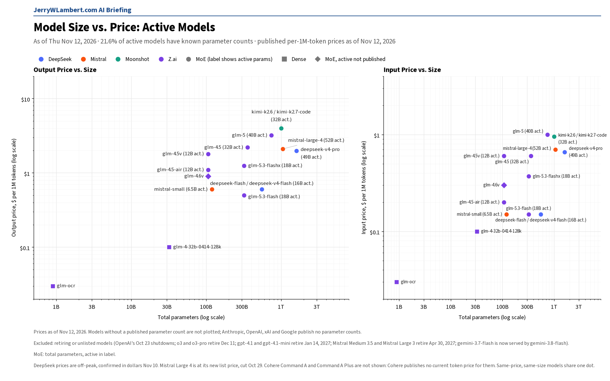
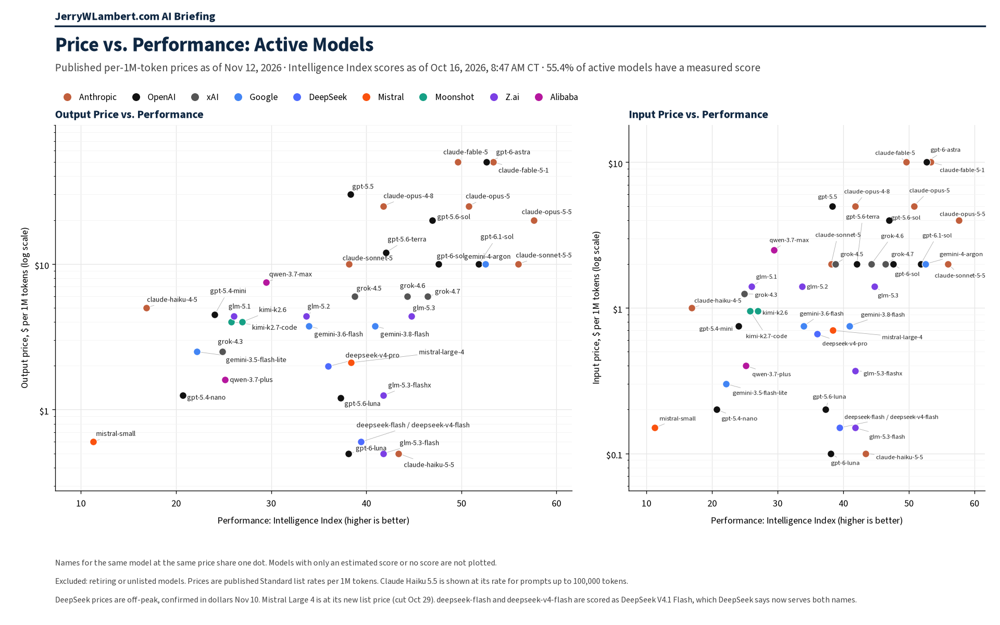

Daily Model Brief, November 12, 2026
Google released Gemini Decision, a model for yes or no, category and rubric judgments that bills only input, at $0.10 per million tokens, and produces zero output tokens. No vendor changed a list price on an existing tracked model since Wednesday.
Download PDF SubscribeExecutive Summary
Google released Gemini Decision (gemini-decision-1) and a new Decisions API on Wednesday, November 11, for yes or no, category and rubric decisions across text, images, video, audio and PDFs. On the paid tier it costs $0.10 per million input tokens and produces zero output tokens. Each request bills its shared input once, however many questions it asks; each question adds tokens for its own instructions. Context caching and the Batch API are not available, and a free tier is offered.
No vendor I track changed a standard list token price on an existing publicly available text or chat model since Wednesday's brief.
Alibaba's Model Studio documentation now lists qwen4-max-preview as its latest model. No price has been published for it yet.
Earlier releases this week stand at their launch prices: Gemini 4 Carbon (gemini-4-carbon) at $2.00 input, $0.10 cached and $10.00 output per million tokens through November 30, then $4.00, $0.20 and $20.00 from Tuesday, December 1, the same as Gemini 4 Argon; Claude Fable 5.2 (claude-fable-5-2) at $8.00 input, $0.20 cached and $40.00 output per million tokens, 20% below Fable 5.1, which stays listed at $10.00 and $50.00; Claude Mythos 5.2 at the same prices for verified organizations only; and Meta's Muse Ember 1.0 (muse-ember-1.0) at $0.10 input, $0.004 cached and $0.50 output up to 200K tokens, and three times that above 200K.
GPT-5.6 Sol (gpt-5.6-sol) remains at its promotional $4.00 input, $0.40 cached and $20.00 output through November 30, 2026, with no post-promo price published. OpenAI will remove the gpt-image-2 image model and its gpt-image-2-2026-04-21 snapshot on Wednesday, February 10, 2027.
MiniMax's H3-Image models are unchanged at $2.30 text input per million tokens, with 4K images at 50% off until 10:00 AM CT on Tuesday, November 17. These are image models, not a change to a tracked chat price.
Tencent still lists Hy4 (hy4) at $0.834 input, $0.042 cached and $2.501 output per million tokens in its documentation, billed at 50% of list through the end of December 31, 2026, Beijing time (9:59 AM CT on Thursday, December 31). Its main price list could not be confirmed today.
Google's earlier notices stand: requests to gemini-embedding-2-preview already route to gemini-embedding-2, and from Tuesday, December 1, gemini-2.5-pro routes to gemini-3.8-flash and gemini-2.5-flash to gemini-3.5-flash-lite, each billed at the new model's rates.
Moonshot still has kimi-k2.7-code, kimi-k2.7-code-highspeed and kimi-k2.6 on its deprecated list, closed to newly registered accounts, with retirement expected in late December 2026 and no exact date.
Dates coming up: StepFun starts billing its StepAudio 3 voice models at 10:00 PM CT on Monday, November 16. Google shuts down several preview speech and live audio models on Tuesday, November 17, Microsoft retires Llama 4 Maverick on Azure on Thursday, November 19, and fast mode for Claude Opus 4.8 is removed on Monday, November 30. GPT-5.6 Sol's promotional price ends on November 30, and Gemini 4 Carbon and Gemini 4 Argon prices double on Tuesday, December 1.
Items from earlier briefs still stand: Mistral Large 4 (mistral-large-4) is generally available at $0.70 input and $2.10 output; Mistral Medium 3.5 and Mistral Large 3 retire on Friday, April 30, 2027; DeepSeek's Search and Fetch tools bill at $0.75 per 1,000 successful requests; and OpenAI's 10% uplift on FedRAMP endpoints continues.
Not confirmed today: Amazon prices, Tencent's main price list, Moonshot's per-search web search prices, IBM's model list, and Microsoft, which lists no pay-as-you-go prices. Their last confirmed prices stand. Performance scores in the chart are still as of October 16 and have not been refreshed since.
What This Means for Customers
- If you use a chat model to grade, classify or score content, test
gemini-decision-1. It bills only input, at $0.10 per million tokens, with no output tokens, and a request that asks several questions about the same input pays for that input once. It does not support context caching or the Batch API. - If you run
gemini-4-argonon hard reasoning work, you can testgemini-4-carbonby changing only the model string. The per-token price is the same, but Carbon uses more thinking tokens per turn, so measure cost per task, not per token, before you switch. - If you budget for either Gemini 4 model, plan for December 1. Input, cached and output prices all double that day, from $2.00, $0.10 and $10.00 to $4.00, $0.20 and $20.00 per million tokens.
- If you run Claude Fable 5.1, test
claude-fable-5-2. It lists 20% lower on input and output ($8.00 and $40.00 against $10.00 and $50.00). Fable 5.1 keeps its current price, so the saving only applies once you change the model string. - If you try
muse-ember-1.0, keep prompts under 200K tokens where you can. Above that, the whole request bills at three times the base rates, and web search grounding adds $2.50 per 1,000 queries. - If you call
gemini-2.5-pro, testgemini-3.8-flashbefore Tuesday, December 1. At today's list prices the routed requests cost less per token ($0.75 input and $3.75 output through December 31, against 2.5 Pro's $1.25 and $10.00 for prompts up to 200K tokens), but 3.8 Flash rises to $1.50 and $7.50 on January 1, 2027. - If you call
gemini-2.5-flash, requests move togemini-3.5-flash-liteon December 1 at the same text list price ($0.30 input, $0.03 cached, $2.50 output). Test the new model first. - If you rely on
gpt-5.6-sol, plan for November 30. Its promotional price runs through that date and OpenAI has not published what it costs afterward. - If you build on StepFun's StepAudio 3 voice models, the free period ends at 10:00 PM CT on Monday, November 16. Realtime speech then bills at $0.125 per session minute, counted by the second, and text to speech at $14.00 per million input characters.
- If you still call
gemini-3.1-flash-tts-previewor the preview live audio models, move togemini-3.8-flash-ttsorgemini-3.8-livebefore Tuesday, November 17. - If you still use Moonshot's K2 models, plan the move to
kimi-k3.1-proby December 1. New accounts cannot use K2, and Moonshot expects to retire it in late December. - If you use fast mode on
claude-opus-4-8, those requests will return an error after November 30. Move fast-mode work toclaude-opus-5-5, or drop the fast setting.
New Models and Price Changes
Prices in USD per 1M tokens.
| Vendor | Model ID | Status | Input | Cached | Output |
|---|---|---|---|---|---|
| gemini-decision-1 | New Wed Nov 11. Decisions API only. Input covers text, image, video, audio and PDF; zero output tokens. No context caching; no Batch API. Free tier offered. | $0.10 | Not available | Not applicable | |
| Alibaba | qwen4-max-preview | Now listed in Model Studio documentation as the latest model. No price published yet. | Not listed | Not listed | Not listed |
| gemini-4-carbon | Unchanged. Listed Tue Nov 10. Introductory price through Nov 30; from Tue Dec 1: $4.00 input / $0.20 cached / $20.00 output. Output includes thinking tokens. Implicit caching only. Paid tier only. 1M-token context. | $2.00 | $0.10 | $10.00 | |
| gemini-4-argon | Unchanged. Same prices as Gemini 4 Carbon, including the Dec 1 step to $4.00 / $0.20 / $20.00. | $2.00 | $0.10 | $10.00 | |
| Anthropic | claude-fable-5-2 | Unchanged. Listed Mon Nov 9. Cache writes: $10.00 (5-minute) or $16.00 (1-hour). 1M context at standard pricing; 128K max output. Fast mode: $16.00 input / $80.00 output. Fable 5.1 unchanged at $10.00 / $50.00. | $8.00 | $0.20 | $40.00 |
| Meta | muse-ember-1.0 | Unchanged. Listed Mon Nov 9. Prompts up to 200K tokens. Over 200K the whole request bills at $0.30 input / $0.012 cached / $1.50 output. No cache-write price published. Web search grounding $2.50 per 1,000 queries. | $0.10 | $0.004 | $0.50 |
| Anthropic | claude-mythos-5-2 | Unchanged. Same prices as Fable 5.2, limited to organizations Anthropic has verified. | $8.00 | $0.20 | $40.00 |
| MiniMax | MiniMax-H3-Image | Unchanged. Image model listed Nov 10. Text input $2.30, image input $1.50, image output $3.80. Highspeed version: $2.30 / $3.00 / $7.60. 4K images 50% off until Tue Nov 17, 10:00 AM CT. | $2.30 | Not listed | $3.80 |
| OpenAI | gpt-5.6-sol | Unchanged. Promotional price through Nov 30; not in OpenAI's main price table. No post-promo price published. | $4.00 | $0.40 | $20.00 |
| StepFun | stepaudio-3-realtime | Unchanged. Free until Mon Nov 16, 10:00 PM CT (12:00 PM Nov 17, China time); then $0.125 per session minute, billed by the second, partial seconds billed as full seconds. | Per minute | Not applicable | Per minute |
| StepFun | stepaudio-3-tts | Unchanged. Free until Mon Nov 16, 10:00 PM CT; then $14.00 per million billable input characters. Voice cloning or design: $1.50 per voice. | Per character | Not applicable | Not applicable |
| gemini-embedding-2-preview | Unchanged. Deprecated Fri Nov 6. Requests route to gemini-embedding-2 and bill at Gemini Embedding 2 rates. | See status | See status | See status | |
| Alibaba | qwen-audio-3.1-asr-flash | Unchanged. Listed Nov 9 (international). qwen-audio-3.0-asr-flash: $0.000035 per second of input audio, output free. | $0.15 | Not listed | $0.47 |
| MiniMax | image-01-live | Unchanged. Listed Nov 9. $0.0035 per image. | Per image | Not applicable | Per image |
| OpenAI | gpt-image-2.6-sunburst | Unchanged. Image model listed Nov 4. Image tokens $8.00 input / $30.00 output / $2.00 cached; text tokens $5.00 input / $1.25 cached; no separate text output price listed. | $8.00 | $2.00 | $30.00 |
| OpenAI | gpt-image-2.6-flare | Unchanged. Image model listed Nov 4. Same list prices as Sunburst: image $8.00 / $30.00 / $2.00 cached; text $5.00 / $1.25 cached. | $8.00 | $2.00 | $30.00 |
| Mistral | mistral-large-4 | Unchanged. Generally available since Nov 5. Named replacement for Mistral Medium 3.5 and Mistral Large 3. No cache-write price published. | $0.70 | $0.07 | $2.10 |
| Tencent | hy4 | Unchanged. Listed Nov 4. Same list price per Tencent's documentation. Billed at 50% of list through Dec 31 (Beijing time); start date not stated. Main price list not confirmed today. | $0.834 | $0.042 | $2.501 |
| gemini-2.5-pro | Deprecated (notice Mon Nov 2). From Tue Dec 1, requests route to gemini-3.8-flash and bill at its rates. Prices shown are for prompts up to 200K tokens. | $1.25 | $0.125 | $10.00 | |
| gemini-2.5-flash | Deprecated (notice Mon Nov 2). From Tue Dec 1, requests route to gemini-3.5-flash-lite, whose text prices are the same. | $0.30 | $0.03 | $2.50 | |
| DeepSeek | Search API / Fetch API | Unchanged. Billing live. Calls through DeepSeek Harness, Claude Code, Codex and Codex Alpha Search included. $0.75 per 1,000 successful requests each. | Per request | Not applicable | Per request |
| OpenAI | gpt-6-rosalind | Unchanged. Limited to organizations approved for life sciences research. Cache writes: $18.75 (30-minute) or $37.50 (12-hour). | $15.00 | $1.50 | $75.00 |
| OpenAI | gpt-6-astra-law | Unchanged. Promotional price through at least Dec 31. | $10.00 | $1.00 | $50.00 |
| OpenAI | FedRAMP endpoints | In effect since Nov 1: 10% uplift on token prices. Standard global endpoint unchanged. | +10% | +10% | +10% |
| DeepSeek | deepseek-flash (also serves deepseek-v4-flash) | Off-peak price; unchanged. Peak-hour prices are double. | $0.15 | $0.003 | $0.60 |
| DeepSeek | deepseek-v4-pro | Off-peak price; unchanged. Peak-hour prices are double. | $0.66 | $0.022 | $1.98 |
| OpenAI | gpt-6.1-terra | Unchanged. Cache writes: $1.25 (30-minute) or $2.50 (12-hour). Prompts over 272K input tokens: 2x input and cache, 1.5x output, for the whole request. | $1.00 | $0.05 | $5.00 |
| OpenAI | gpt-6.1-sol | Unchanged. Promotional prices through Nov 30; Terra costs half on every line. | $2.00 | $0.10 | $10.00 |
| Grounding with Google Search (Gemini 3 and newer) | Unchanged. Daily cap of 1,500 requests; 5,000 free searches a month, then $14 per 1,000. | Per request | Not applicable | Per request | |
| Moonshot | Web search (Responses API and Kimi K3 built-in tool) | Terms unchanged. Billed per search the server runs, plus model tokens. Per-call prices still not displayed; not confirmed. | Per call | Not applicable | Per call |
| Moonshot | kimi-k3.1-pro | Unchanged (standard rate). Cache writes: $2.00 (5-minute) or $4.00 (1-hour). | $2.00 | $0.20 | $10.00 |
| Moonshot | kimi-k2.7-code | Unchanged price. Listed as deprecated; closed to new accounts; retirement expected late December. | $0.95 | $0.19 | $4.00 |
| Moonshot | kimi-k2.6 | Unchanged price. Listed as deprecated; closed to new accounts; retirement expected late December. | $0.95 | $0.16 | $4.00 |
| gemini-3.8-flash (also serves gemini-3.7-flash) | Standard tier unchanged through Dec 31; $1.50 / $0.15 / $7.50 from Jan 1, 2027. Replacement for gemini-2.5-pro from Dec 1. | $0.75 | $0.075 | $3.75 | |
| Alibaba | qwen3.8-max | Unchanged. | $2.00 | Not listed | $6.00 |
| MiniMax | MiniMax-M3.1-Flash | Unchanged. | $0.15 | $0.015 | $0.60 |
| Meta | muse-spark-1.3 | Unchanged (Standard mode). | $1.25 | $0.15 | $4.25 |
| Tencent | Hy3 | Last confirmed Mon Nov 2. Not confirmed today. No cache-write price published. | $0.132 | $0.033 | $0.528 |
| TypeSafe | jev-1.14.0 | Unchanged. jev-latest points here. Output free. | $0.042 | Not listed | Free |
| IBM | granite-4-h-small | Last confirmed price. Not confirmed today. | $0.0636 | Not listed | $0.265 |
- No standard list token price changed on an existing generally available text or chat model since Wednesday's brief at any vendor I could confirm. Gemini Decision is a new model that bills input only, and Alibaba has published no price for qwen4-max-preview.
- Prices match the last confirmed figures at Anthropic, OpenAI, Google, xAI (Grok), DeepSeek, Moonshot, Z.ai, MiniMax, Mistral, Alibaba, Cohere, Meta, ByteDance, TypeSafe, StepFun and Perplexity.
- Prices from Amazon and Tencent's main price list could not be confirmed today (Tencent's Hy4 figures come from its documentation), Moonshot's per-search prices did not display, IBM's model list could not be confirmed, and Microsoft lists no pay-as-you-go prices. Their last confirmed prices stand, unverified today.
Deprecations
| Vendor | Model ID | Shutdown (CT) | Replacement | Note |
|---|---|---|---|---|
| Moonshot | kimi-k2.6 kimi-k2.7-code kimi-k2.7-code-highspeed (all K2 models) | Late December 2026 (no exact date) | kimi-k3.1-pro | Unchanged. Closed to newly registered accounts; existing accounts keep access until retirement. |
| gemini-embedding-2-preview | Fri Nov 6, 2026 (in effect) | gemini-embedding-2 | Unchanged. Requests route automatically to the replacement and bill at its rates. | |
| gemini-3.1-flash-tts-preview gemini-2.5-flash-preview-tts gemini-2.5-pro-preview-tts | Tue Nov 17, 2026 (time not stated) | gemini-3.8-flash-tts or gemini-3.8-flash-lite-tts | Unchanged. | |
| gemini-3.1-flash-live-preview gemini-2.5-flash-native-audio-preview-12-2025 | Tue Nov 17, 2026 (time not stated) | gemini-3.8-live | Unchanged. | |
| Microsoft (Azure) | Llama-4-Maverick-17B-128E-Instruct-FP8 | Thu Nov 19, 2026 (time not stated) | None named | Unchanged. |
| Anthropic | claude-opus-4-8 (fast mode only) | Mon Nov 30, 2026 (time not stated) | claude-opus-5-5 (fast mode) | Unchanged. Fast-mode requests to claude-opus-4-8 will return an error after removal. |
| Anthropic | claude-sonnet-4-5-20250929 | Mon Nov 30, 2026 (time not stated) | claude-sonnet-5-5 | Unchanged. |
| gemini-2.5-pro gemini-2.5-flash | Tue Dec 1, 2026 (time not stated) | gemini-3.8-flash gemini-3.5-flash-lite | Unchanged. Requests route automatically to the replacement and bill at its rates. gemini-2.5-flash-lite is not affected. | |
| Microsoft (Azure) | Ministral-3B mistral-medium-2505 | Wed Dec 9, 2026 (time not stated) | ministral-ministral-4b-instruct mistral-medium-3-5 | Unchanged. Applies to Azure deployments, not Mistral's own API. |
| OpenAI | gpt-5 gpt-5-mini gpt-5-nano gpt-5-pro o3 o3-pro (dated snapshots) | Fri Dec 11, 2026 (time not stated) | gpt-5.6-sol gpt-5.6-terra gpt-5.6-luna | Unchanged. gpt-5 and o3 move to gpt-5.6-sol, gpt-5-mini to gpt-5.6-terra, gpt-5-nano to gpt-5.6-luna, and gpt-5-pro and o3-pro to gpt-5.6-sol in pro reasoning mode. |
| OpenAI | gpt-4.1 gpt-4.1-mini gpt-4o-2024-08-06 gpt-4o-2024-11-20 gpt-4o-mini-2024-07-18 | Wed Jan 13, 2027, 6:00 PM CT | gpt-6-luna | Unchanged. OpenAI lists Jan 14, 2027 with no time; 6:00 PM CT Jan 13 is 00:00 UTC Jan 14. |
| Microsoft (Azure) | gpt-4o (version 2024-05-13) | Thu Jan 14, 2027 (time not stated) | gpt-5.1 (version 2025-11-13) | Unchanged. Applies to Azure deployments, not OpenAI's own API. |
| Microsoft (Azure) | Llama-3.3-70B-Instruct | Sun Jan 31, 2027 (time not stated) | None named | Unchanged. |
| Microsoft (Azure) | cohere-command-a mistral-small-2503 | Mon Feb 15, 2027 (time not stated) | Cohere-command-a-plus-05-2026 mistralai-mistral-small-4-119b-2603 | Unchanged. |
| OpenAI | gpt-5.4-nano gpt-5.4-nano-2026-03-17 | Thu Apr 1, 2027 (time not stated) | gpt-6-luna | Unchanged. Also retiring that day: gpt-5.3-codex and gpt-5.1, with gpt-6-sol as their replacement. |
| OpenAI | gpt-image-2 gpt-image-2-2026-04-21 | Wed Feb 10, 2027 (time not stated) | gpt-image-2.6-sunburst or gpt-image-2.6-flare | Unchanged. Image model removed from the API. |
| Microsoft (Azure) | Kimi-K2.6 Kimi-K2.7-Code | Fri Apr 16, 2027 (time not stated) | None named | Unchanged. Azure's date is later than Moonshot's own K2 retirement. |
| Mistral | mistral-medium-3-5 mistral-large-2512 | Fri Apr 30, 2027 (time not stated) | mistral-large-4 | Unchanged. Deprecated Sat Oct 31; still callable until retirement. Prices no longer listed. |
| Microsoft (Azure) | embed-v-4-0 | Tue Jun 1, 2027 (time not stated) | Cohere-embed-v5-fast, Cohere-embed-v5-pro | Unchanged. |
| Microsoft (Azure) | Cohere-rerank-v4.0-fast Cohere-rerank-v4.0-pro | Mon Sep 13, 2027 (time not stated) | Cohere-rerank-v5-fast Cohere-rerank-v5-pro | Unchanged. |
| Microsoft (Azure) | gpt-oss-120b | Wed Sep 15, 2027 (time not stated) | None named | Unchanged. |
| Microsoft (Azure) | DeepSeek-V3.2 DeepSeek-V3.2-Speciale | Mon Nov 1, 2027 (time not stated) | DeepSeek-V4.1-Flash DeepSeek-V4-Pro | Unchanged. |
| Anthropic | claude-haiku-4-5-20251001 | Not sooner than Thu Oct 15, 2026; no date set | None named | Watch item. Still active with no date set. |
| Cohere | command-r command-r-plus | Deprecated Sep 15, 2025; no shutdown date set | command-r-08-2024 command-r-plus-08-2024 command-a-03-2025 | Closed to new customers; existing users keep access until retirement. |
- Retirement of two preview versions of Microsoft's Azure model-router (2025-05-19 and 2025-08-07) stands at January 27, 2027.
- Microsoft has pushed Azure retirement for gpt-5-mini (version 2025-08-07) and gpt-5.1 (version 2025-11-13) out to July 13, 2027. These Azure dates do not change OpenAI's own API dates.
- OpenAI's transcription notice is unchanged: whisper-1, gpt-4o-transcribe, gpt-4o-mini-transcribe, gpt-4o-transcribe-diarize and the /v1/audio/translations endpoint shut down February 26, 2027.
Price Tracker
Shares of the full tracked population.
- Tracked models: 1,934 (count as of October 25).
- Audited pricing, confirmed against the vendor's own published prices: 13.1% of the full tracked population.
- Unaudited pricing: 5.3%.
- The rest have no public per-token price (47.6%: self-hosted open weights, retired or unpublished) or are duplicate listings of another tracked model (34.0%).
Agent Platforms
Hosted AI agents that come with their own persistent cloud computer.
- Grok Bot (xAI): its own persistent cloud computer. On the X Subscription it is included on Premium, Super and Ultra, draws from the same weekly usage pool as Cursor and the Grok apps, and prepaid credit covers usage past the pool. The latest release is v1.0.1 (dated November 11, and including 1.0.0): on Team, Enterprise and Ultra plans a Bot can join a Google Meet, Zoom or Microsoft Teams call from a link, answer in the meeting chat and send a summary afterward; Team Bots can join Microsoft Teams; owners and Managers can share their own app login as a shared connector; and the Voice menu adds a speed slider from 0.5x to 2x. Plan prices could not be re-checked today; last confirmed unchanged.
- dots (OpenAI): not verified today. Last confirmed: a dot "has its own cloud computer," and the first comes with Pro and Business Premium at no extra cost.
- Muse (Meta): "You and your Muse share your own dedicated computer in the cloud." Runs on Muse Spark 1.3, whose API price is unchanged at $1.25 input, $0.15 cached and $4.25 output per million tokens. Muse subscription billing could not be verified today.
- Manus: the Cloud Computer add-on is a persistent server billed separately at $30 a month (2 vCPUs, 4 GB RAM, 70 GB storage) or $50 a month (2 vCPUs, 8 GB RAM, 120 GB storage). No change.
- Genspark Claw: runs "on a dedicated cloud computer provisioned just for you," which requires a Lite, Standard or Powerful Cloud Computer subscription; Genspark publishes no dollar amounts on its help pages. No change to pricing.
Model Size vs. Price

Among active models with a known parameter count (21.6% of active models), price rises with total size (rank correlation 0.69 on output price). No plotted price changed since Wednesday. Anthropic, OpenAI, xAI and Google publish no parameter counts, so their models are not plotted. Gemini 2.5 Pro and 2.5 Flash, now retiring, are not counted as active in either chart. Prices as of November 12, 2026.
Price vs. Performance

Among active models with a performance score (55.4% of active models), price rises with performance only loosely (rank correlation 0.55 on output price). Claude Haiku 5.5 leads at $0.50 or less (43.4). At the frontier, Gemini 4 Argon scores 52.6 and GPT-6.1 Sol 51.8, each at $10 output, while xAI's Grok 4.7 scores 46.5 at $6. Scores as of October 16, 2026 (not refreshed since); prices as of November 12, 2026.
All times Central. Vendor prices, dates and model IDs are as of 8:30 AM CT on November 12, 2026. Chart prices are as of November 12, 2026. Performance scores are as of October 16, 2026 and have not been refreshed since. Models released this week, including Claude Fable 5.2, Muse Ember 1.0, Gemini 4 Carbon and Gemini Decision, are not yet in the charts. Price Tracker percentages are shares of the full tracked population; chart percentages are shares of active models. Items that could not be confirmed are marked unverified.